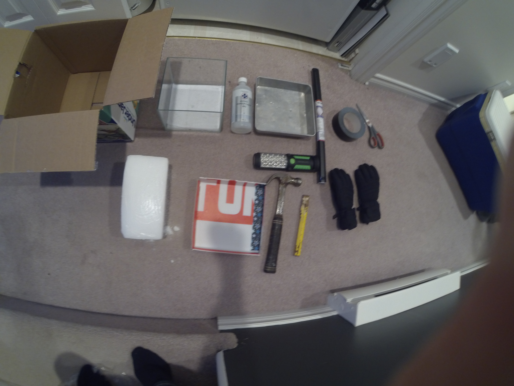
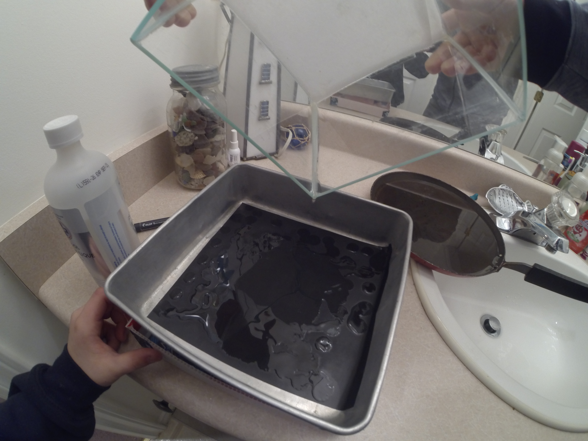
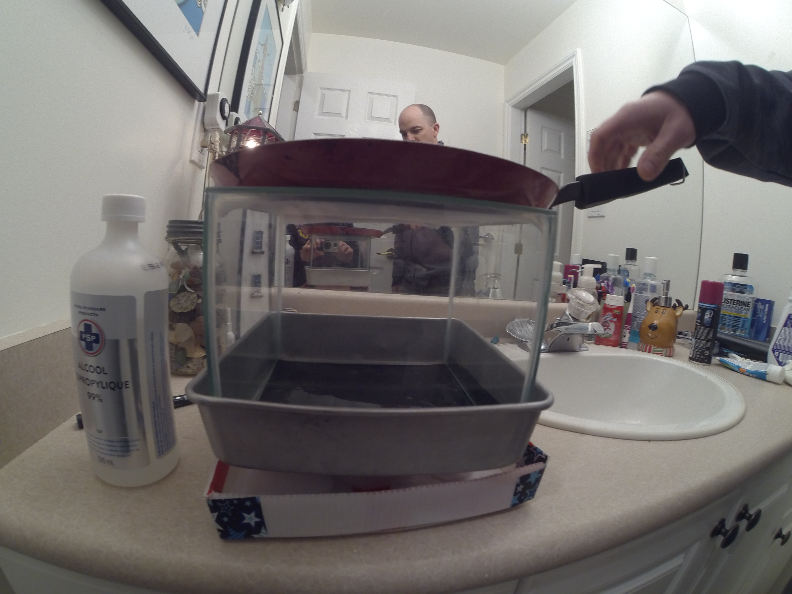

Cloud Chamber
Overview
Creating a supersaturated vapor allows ionizing radiation to be seen by the trail it leaves behind.
With a pan of hot water at the top of a chamber filled with isopropyl alcohol, and dry ice at the bottom, the conditions to see radiation are perfect.
Media
Materials used

Setting up the isopropyl alcohol

Full setup

An alpha particle (thick trail) can be seen near the middle of the chamber